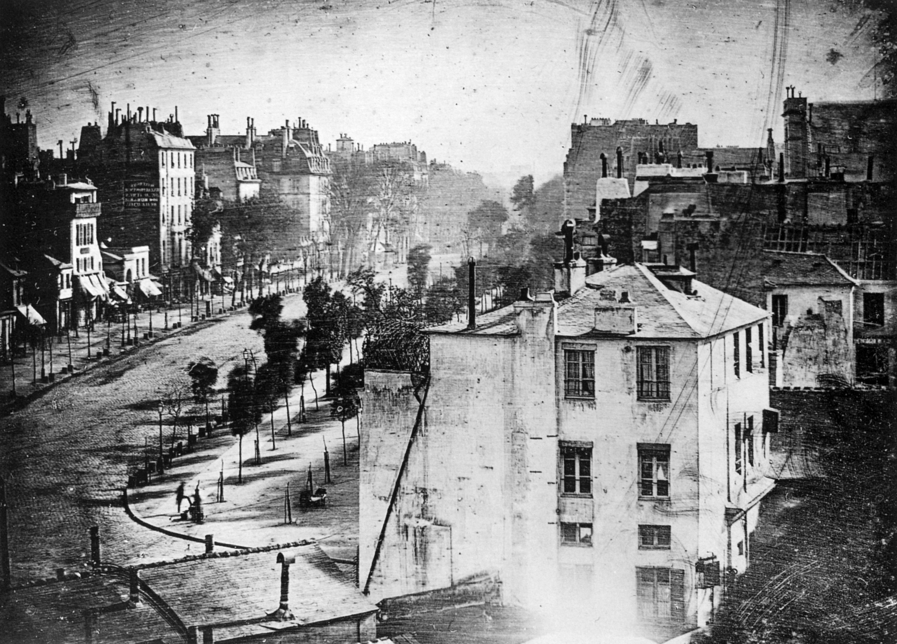
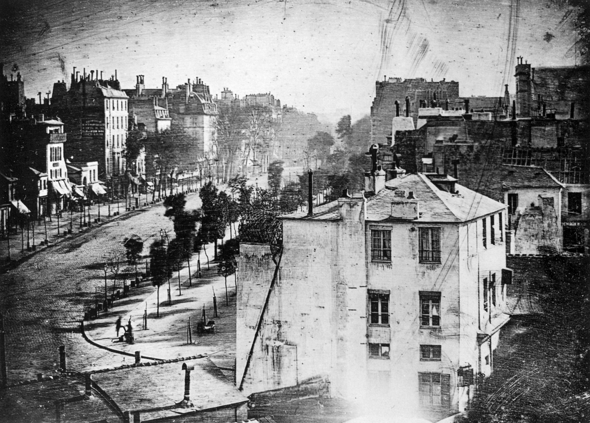
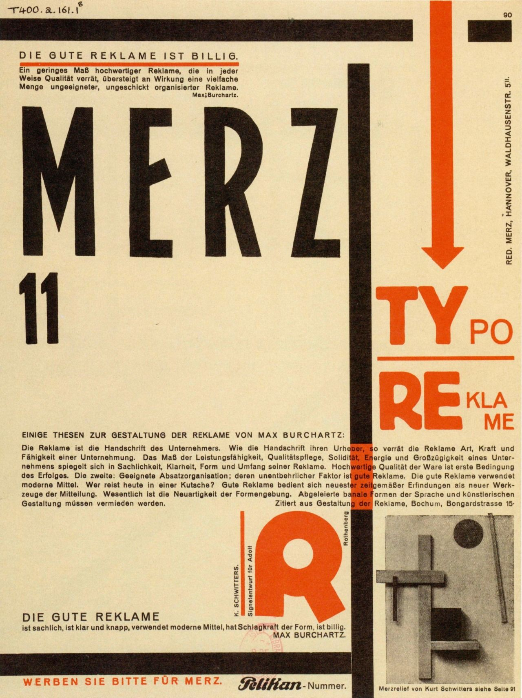
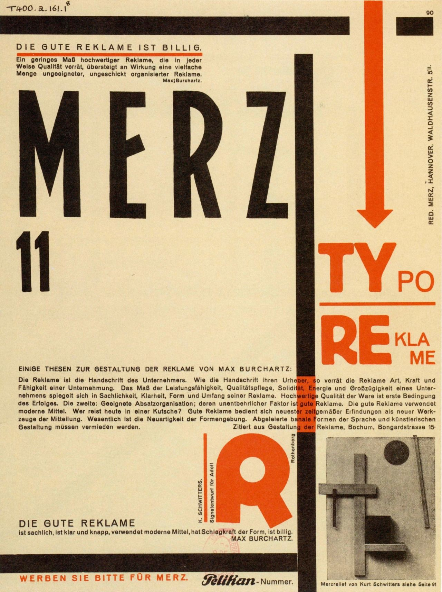
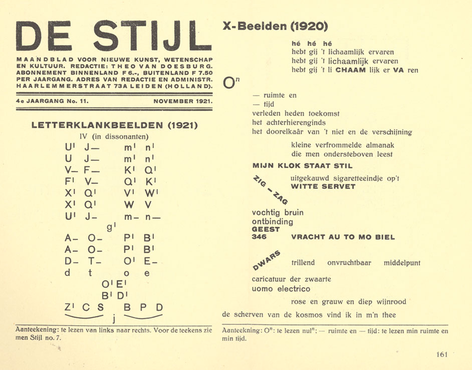
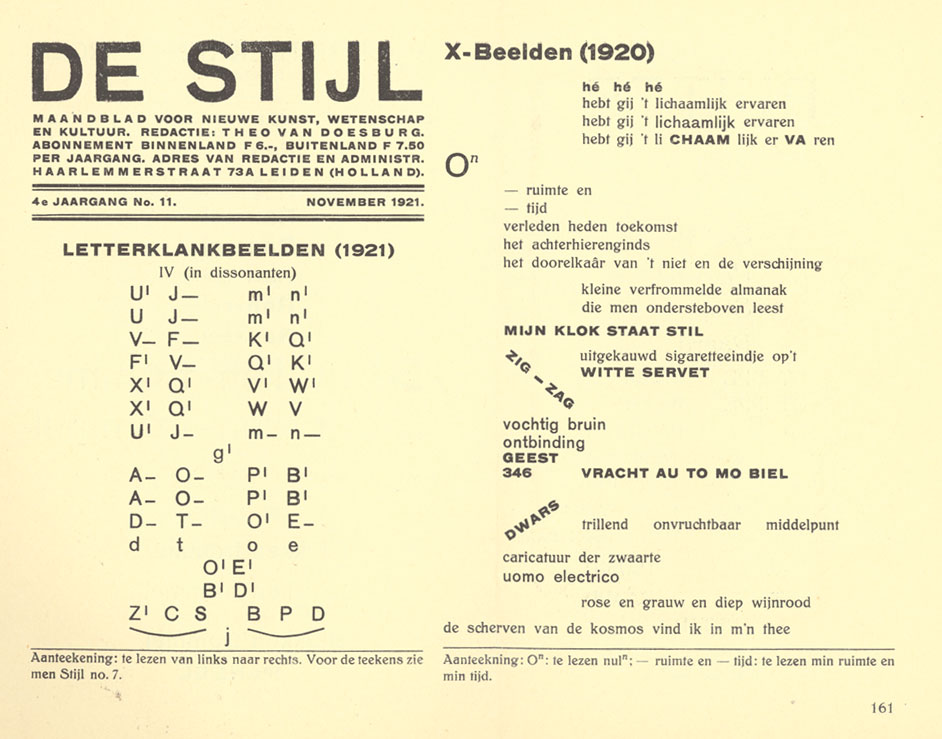

Graphic Design
History
Timeline
Drag or click
to discover more
Scroll to navigate
through time
Unknown Title
Unknown Author
USA
MEGGS, Philip; PURVIS, Alson. History of Graphic Design. 4º edição. São Paulo: Cosac Naify, 2009
Unknown Title, 2.000-1.000 BC
Unknown Author
San Raphael, Utah
MEGGS, Philip; PURVIS, Alson. History of Graphic Design. 4º edição. São Paulo: Cosac Naify, 2009
Unknown Title, 8.000 BC
Unknown Author
Bhimbetka Rock Shelters, India
https://www.heritagedaily.com/2020/03/10-prehistoric-cave-paintings/126971
Unknown Title, 15.000-10.000 BC
Unknown Author
Lascaux, France
historytoday.com/archive/natural-histories/prehistoric-horses
Unknown Title
Unknown Author
Serra da Capivara, Brazil
viagemeturismo.abril.com.br/atracao/parque-nacional-da-serra-da-capivara/
Unknown Title, 30.000-10.000 BC
Unknown Author
Kakadu National Park
heritagedaily.com/2020/03/10-prehistoric-cave-paintings/126971

Sumerian Cuneiform, 3200 BC
Unknown Author
mesopotamianhistory.wordpress.com/3179200-cuneiform-writing-of-the-ancient-sumerian-or-assyrian-civilization-in-iraq/
Clay Tablet with Sumerian Pictographs, 3100 BC
Unknown Author
MEGGS, Philip; PURVIS, Alson. History of Graphic Design. 4º edição. São Paulo: Cosac Naify, 2009
Temple of Kom Ombo: Hieroglyphs
Unknown Author
britannica.com/topic/hieroglyph
Hieroglyphs
Unknown Author
conhecimentocientifico.com/escrita-origem-historia/
Rebus
Unknown Author
timetoast.com/timelines/the-history-of-graphic-design-44a77e73-69a8-417a-bb91-891203d26898
Oracle Bone, 1600-1046 BC
Unknown Author
beyond-calligraphy.com/2010/03/05/oracle-bone-script/
Grooms and Horses, 1296-1359 BC
Zhao Mengfu
metmuseum.org/toah/hd/yuan/hd_yuan.htm
A Sheep and Goat, 1300 BC
Zhao Mengfu
MEGGS, Philip; PURVIS, Alson. History of Graphic Design. 4º edição. São Paulo: Cosac Naify, 2009
Chin Wen, 1100-1000 BC
Unknown Author
MEGGS, Philip; PURVIS, Alson. History of Graphic Design. 4º edição. São Paulo: Cosac Naify, 2009
Chop, 206 BC-220 AD
Unknown Author
artblogbyegborg.blogspot.com/2013/10/history-of-writing-part-4-chinese.html
The Book of Durrow, 650-700
Unknown Author
artsandculture.google.com/exhibit/the-book-of-durrow/tAKy0erUfMJQIQ
Book of Kells, 800
Unknown Author
adlmagazin.wordpress.com/2014/01/02/the-beautiful-book-of-kells/
Book of Kells, 800
Unknown Author
adlmagazin.wordpress.com/2014/01/02/the-beautiful-book-of-kells/
Manuscrit du Moralia in Job de Grégoire le Grand, 945
Unknown Author
MEGGS, Philip; PURVIS, Alson. History of Graphic Design. 4º edição. São Paulo: Cosac Naify, 2009
São Cristóvão, 1423
Unknown Author
MEGGS, Philip; PURVIS, Alson. History of Graphic Design. 4º edição. São Paulo: Cosac Naify, 2009
Gutenberg Bible, 1450-1455
Johann Gutenberg
apollo-magazine.com/gutenbergs-printed-bible-landmark-european-culture/
Psalmorum Codex, 1457
Fust and Schoeffer
lookandlearn.com/history-images/M163255/Page-from-the-Psalmorum-Codex
Rationale Divinorum Officiorum, 1459
Jan Fust and Peter Schoeffer
MEGGS, Philip; PURVIS, Alson. History of Graphic Design. 4º edição. São Paulo: Cosac Naify, 2009
K, 1464
Unknown Author
MEGGS, Philip; PURVIS, Alson. History of Graphic Design. 4º edição. São Paulo: Cosac Naify, 2009
Paupers' Bible, 1465
Albrecht Pfister
MEGGS, Philip; PURVIS, Alson. History of Graphic Design. 4º edição. São Paulo: Cosac Naify, 2009
Liber Chronicarum, 1493
Anton Koberger
MEGGS, Philip; PURVIS, Alson. History of Graphic Design. 4º edição. São Paulo: Cosac Naify, 2009
Liber Chronicarum, 1493
Anton Koberger
arthousehejtmanek.cz/en/exhibitions-and-auctions/evening-auction-2017-18/list-of-works-of-art/liber-chronicarum-the-nuremberg-chronicle-5114/#!
Das Leben der Maria, 1511
Albrecht Dürer
MEGGS, Philip; PURVIS, Alson. History of Graphic Design. 4º edição. São Paulo: Cosac Naify, 2009
Underweisung der Messung, 1525
Albrecht Dürer
MEGGS, Philip; PURVIS, Alson. History of Graphic Design. 4º edição. São Paulo: Cosac Naify, 2009
Ringer-Kunst, 1539
Auerswald
MEGGS, Philip; PURVIS, Alson. History of Graphic Design. 4º edição. São Paulo: Cosac Naify, 2009
Geometriae Elementa, 1482
Erhard Ratdolt, Peter Loeslein and Bernhard Maier
MEGGS, Philip; PURVIS, Alson. History of Graphic Design. 4º edição. São Paulo: Cosac Naify, 2009
Hypnerotomachia Poliphili, 1499
Aldus Manutius
malomil.blogspot.com/2019/07/hypnerotomachia-poliphili.html
Champ Fleury, 1529
Geoffrey Tory
commons.wikimedia.org/wiki/File:Tory-champ-fleury-spread.jpg
Natura Stirpium Libri Tres, 1536
Simon de Colines
books0977.tumblr.com/post/25719435311/de-natura-stirpium-libri-tres-title-page-1536
Bible, 1540
Robert Estienne
florilege.edel.univ-poitiers.fr/items/show/13810
Romain du Roi, 1695
Louis Simonneau
MEGGS, Philip; PURVIS, Alson. History of Graphic Design. 4º edição. São Paulo: Cosac Naify, 2009
Romain du Roi, 1695
Louis Simonneau
MEGGS, Philip; PURVIS, Alson. History of Graphic Design. 4º edição. São Paulo: Cosac Naify, 2009
Specimens of Caslon roman and italic, 1734.
William Caslon
MEGGS, Philip; PURVIS, Alson. History of Graphic Design. 4º edição. São Paulo: Cosac Naify, 2009
Ariette, Mise en Musique, 1756
Pierre Simon Fournier
MEGGS, Philip; PURVIS, Alson. History of Graphic Design. 4º edição. São Paulo: Cosac Naify, 2009
Manuel Typographique, 1764-1768
Pierre Simon Fournier
commons.wikimedia.org/wiki/File:Manuel_Typographique_cover.png
Manuel Typographique, 1764-1768
Pierre Simon Fournier
commons.wikimedia.org/wiki/File:Manuel_Typographique_cover.png
Saggio Tipografico, 1771
Giambattista Bodoni
MEGGS, Philip; PURVIS, Alson. History of Graphic Design. 4º edição. São Paulo: Cosac Naify, 2009
The Chase, 1796
Thomas Bewick
commons.wikimedia.org/wiki/File:William-Bulmer-The-Chase-1796.jpg
Manuale Tipografico, 1818
Giambattista Bodoni
alai.it/dettaglio.php?lang_id=1&ev_id=391

Twelve Lines Pica, 1765
Thomas Cotterell
MEGGS, Philip; PURVIS, Alson. History of Graphic Design. 4º edição. São Paulo: Cosac Naify, 2009
Fat Face, 1815
Robert Thorne
MEGGS, Philip; PURVIS, Alson. History of Graphic Design. 4º edição. São Paulo: Cosac Naify, 2009
Antique, 1821
Vincent Figgins
MEGGS, Philip; PURVIS, Alson. History of Graphic Design. 4º edição. São Paulo: Cosac Naify, 2009
Egytptian, 1821
Robert Thorne
MEGGS, Philip; PURVIS, Alson. History of Graphic Design. 4º edição. São Paulo: Cosac Naify, 2009
Pearl, 1828
Vincent Figgins
MEGGS, Philip; PURVIS, Alson. History of Graphic Design. 4º edição. São Paulo: Cosac Naify, 2009
Ornamented Typeface, 1838-1842
Woods and Sharwoods
MEGGS, Philip; PURVIS, Alson. History of Graphic Design. 4º edição. São Paulo: Cosac Naify, 2009

 

View from the Window at Le Gras, 1826
Joseph Nicéphore Niépce
cool.culturalheritage.org/byorg/abbey/an/an26/an26-3/an26-307.html
Photogenic Drawing of a Plant, 1835
William Henry Fox Talbot
meisterdrucke.pt/artista/William-Henry-Fox-Talbot.html
Bulevar de Paris, 1839
Louis Jacques Daguerre
MEGGS, Philip; PURVIS, Alson. History of Graphic Design. 4º edição. São Paulo: Cosac Naify, 2009
An Oak Tree in Winter, 1841
William Henry Fox Talbot
bl.uk/learning/timeline/item106980.html
A federal encampment at Cumberland Landing on the Virginia Peninsula, 1862
Mathew Brady
eu.usatoday.com/picture-gallery/life/books/2013/08/15/iconic-photos-from-mathew-brady-civil-war-photographer/2662871/
Figure Hopping, 1887
Eadweard Muybridge
cienciadoamanha.com/2020/05/30/eadweard-muybridge/

Acanthus Wallpaper, 1875
William Morris
vam.ac.uk/articles/william-morris-and-wallpaper-design
Wren’s City Churches, 1883
Arthur H. Mackmurdo
longstreet.typepad.com/thesciencebookstore/2009/12/prehistories-of-famous-things-art-nouveau.html
The Angel with the Trumpet, 1884
Herbert Percy Horne
vam.ac.uk/articles/arts-and-crafts-an-introduction

Sudden Shower over Shin-Ōhashi Bridge and Atake, 1856-1859
Hishikawa Moronobu
MEGGS, Philip; PURVIS, Alson. History of Graphic Design. 4º edição. São Paulo: Cosac Naify, 2009
Histoire des quatre fils Aymon, 1883
Eugène Grasset
MEGGS, Philip; PURVIS, Alson. History of Graphic Design. 4º edição. São Paulo: Cosac Naify, 2009
Delftsche Slaolie, 1894
Jan Toorop
MEGGS, Philip; PURVIS, Alson. History of Graphic Design. 4º edição. São Paulo: Cosac Naify, 2009
Le Morte d'Arthur”: "How Four Queens Found Launcelot Sleeping, 1896-97
Aubrey Beardsley
victorianweb.org/art/illustration/beardsley/49.html
The Studio, 1893
Aubrey Beardsley
MEGGS, Philip; PURVIS, Alson. History of Graphic Design. 4º edição. São Paulo: Cosac Naify, 2009
Salon des Cent, Exoposition E. Grasset, 1894
Eugène Grasset
MEGGS, Philip; PURVIS, Alson. History of Graphic Design. 4º edição. São Paulo: Cosac Naify, 2009
The Kiss, 1898
Peter Behrens
MEGGS, Philip; PURVIS, Alson. History of Graphic Design. 4º edição. São Paulo: Cosac Naify, 2009
John and Salomé, for Salomé, 1907
Aubrey Beardsley
themarginalian.org/2016/01/25/aubrey-beardsley-oscar-wilde-salome/
The Glasgow Institute of Fine Arts, 1895
Margaret Macdonald, Frances Macdonald and J. Herbert McNair
MEGGS, Philip; PURVIS, Alson. History of Graphic Design. 4º edição. São Paulo: Cosac Naify, 2009
The Scottish Musical Review, 1896
Charles Rennie Mackintosh
MEGGS, Philip; PURVIS, Alson. History of Graphic Design. 4º edição. São Paulo: Cosac Naify, 2009
Ver Sacrum, XIII, 1902
Koloman Moserr
MEGGS, Philip; PURVIS, Alson. History of Graphic Design. 4º edição. São Paulo: Cosac Naify, 2009
14th exhibition of the Viennese Secession, 1902
Alfred Roller
MEGGS, Philip; PURVIS, Alson. History of Graphic Design. 4º edição. São Paulo: Cosac Naify, 2009
Vienna Secession XVI, Ver Sacrum, 1903
Alfred Roller
MEGGS, Philip; PURVIS, Alson. History of Graphic Design. 4º edição. São Paulo: Cosac Naify, 2009
Les Demoiselles d'Avignon, 1907
Pablo Picasso
moma.org/learn/moma_learning/pablo-picasso-les-demoiselles-davignon-paris-june-july-1907/
Mandora, 1909–10
Georges Braque
tate.org.uk/art/art-terms/c/cubism
Violin and Checkerboard, 1913
Juan Gris
theartist.me/art-inspiration/20-most-famous-cubism-paintings/
Bowl of Fruit, Violin and Bottle, 1914
Pablo Picasso
tate.org.uk/art/art-terms/c/cubism
Breakfast (Le Petit déjeuner), 1914
Juan Gris
moma.org/collection/terms/cubism
Weeping Woman, 1937
Pablo Picasso
tate.org.uk/art/artworks/picasso-weeping-woman-t05010
Les Mots en Liberté Futuristes, 1919
Filippo Tommaso Marinetti
metmuseum.org/blogs/now-at-the-met/2016/a-revolution-in-language
Espansione dinamica + velocità, 1913
Giacomo Balla
artsandculture.google.com/asset/espansione-dinamica-velocit%C3%A0-giacomo-balla/XAH8VibCmJhkRw
Dynamism of a Dog on a Leash, 1912
Giacomo Balla
britannica.com/topic/Dynamism-of-a-Dog-on-a-Leash
Dancer in Pigalle, 1912
Gino Severini
wikiart.org/en/gino-severini/dancer-in-pigalle-1912
The Red Horseman, 1913
Carlo Carra
wikiart.org/en/carlo-carra/the-red-horseman-1913
ACharge of the Lancers, 1916
Umberto Boccionia
fineartamerica.com/featured/load-of-spearmen-digital-remastered-edition-umberto-boccioni.html
 

Reciting the Sound Poem "Karawane", 1916
Hugo Ball
theartstory.org/movement/dada/
Kleine Dada Soirée, 1922
Theo van Doesburg with Kurt Schwitters
moma.org/collection/works/5533?locale=en
Rayograph, 1922
Man Ray
moma.org/collection/terms/rayograph
Merz, 1924
Kurt Schwitters
theartstory.org/artist/schwitters-kurt/
Depero futurista, 1927
Fortunato Depero
ivorypress.com/en/libreria/shop/the-bolted-book-depero-futurista-facsimile-edition/
Depero futurista, 1927
Fortunato Depero
ivorypress.com/en/libreria/shop/the-bolted-book-depero-futurista-facsimile-edition/
Adolf, the Superman: Swallows gold and talks tin, 1935
John Heartfield
havingalookathistoryofgraphicdesign.blogspot.com/2012/11/dadaism.html

Dirigible, 1910
Alfred Stieglitz
wikiart.org/pt/alfred-stieglitz/o-dirigivel-1910
Design in Abstract Forms of Light, 1925
Francis Bruguière
metmuseum.org/art/collection/search/265453
Rayograph, 1922
Man Ray
metmuseum.org/art/collection/search/265487
Rayograph, 1922
Man Ray
metmuseum.org/art/collection/search/265487
Glasaugen, 1929
Herbert Bayer
POLLIG, Hermann; SUHLE, Viola. Bauhausfotografie. Edição nº41. Stuttgart: Dr.Cantz’sche Druckerei, 1989
Photogram, 1938
László Moholy-Nagy
orit-ben-shitrit.com/310-2/
Humanly Impossible (Self-Portrait), 1932/p>
Herbert Bayer
tate.org.uk/art/art-terms/p/photography/a-z
Kehl, 1908
Ludwig Hohlwein
MEGGS, Philip; PURVIS, Alson. History of Graphic Design. 4º edição. São Paulo: Cosac Naify, 2009
Daddy, what did you do in the Great War?, 1915
Saville Lumley
MEGGS, Philip; PURVIS, Alson. History of Graphic Design. 4º edição. São Paulo: Cosac Naify, 2009
8. Kriegsanleihe, 1918
Julius Klinger
commons.wikimedia.org/wiki/File:Julius_Klinger_WWI_poster.jpg
Power - the nerve centre of London's Underground, 1931
Edward McKnight Kauffer
artsandculture.google.com/asset/power-the-nerve-centre-of-london-s-underground-edward-mcknight-kauffer/yQHhBvt03BTMjA
Die Weltwoche, 1950
Herbert Leupin
moma.org/collection/works/7229
Actor's Work Clothes, 1921
Liubov Popova
wikiart.org/pt/artists-by-art-movement/construtivismo-russo#!#resultType:masonry
Proun, 1923
El Lissitzky
wikiart.org/pt/el-lissitzky/proun-1923
Better Pacifiers, 1923
Aleksandr Ródtchenko
janmiddendorp.com/work/books/books-contributed-to/area-2
Books, 1924
Aleksandr Ródtchenko
revolutionizingtheworld.wordpress.com/2017/10/09/designing/
USSR Russische Ausstellung, 1929
El Lissitzky
moma.org/collection/works/6458
Let's Fulfill the Plan of Great Works, 1930
Gustav Klutsis
moma.org/collection/works/6487


 


De Stijl, 1917
Vilmos Huszár
moma.org/collection/works/7893
Composition IX, 1918
Theo van Doesburg
commons.wikimedia.org/wiki/File:Theo_van_doesburg,_composizione_IX,_opus_18,_immaginazione_supplementare_dei_giocatori_di_carte,_1917-18.jpg
De Stijl, cover vol. 6, 1918
Vilmos Huszár
garadinervi.tumblr.com/post/142087376351/vilmos-huszar-de-stijl-n-6-and-n-2-cover-1918
De Stijl, cover vol. 2, 1918
Vilmos Huszár
garadinervi.tumblr.com/post/142087376351/vilmos-huszar-de-stijl-n-6-and-n-2-cover-1918
De Stijl, 1920
Theo van Doesburg
aegis-education.com/de-stijl/
Composition with large red plane, yellow, black, gray and blue, 1921
Piet Mondrian
meisterdrucke.pt/impressoes-artisticas-sofisticadas/Piet-Mondrian/377641/Composi%C3%A7%C3%A3o-com-grande-avi%C3%A3o-vermelho,-amarelo,-preto,-cinza-e-azul,-1921.html
Principles of Neo-Plastic Art: Bauhausbucher, 1925
Theo van Doesburg and László Moholy-Nagy
MEGGS, Philip; PURVIS, Alson. History of Graphic Design. 4º edição. São Paulo: Cosac Naify, 2009
De Stijl, cover vol. 8, 1928
Theo van Doesburg
commons.wikimedia.org/wiki/File:Stijl_vol_08_nr_85-86.jpg
Staatliches Bauhaus in Weimar, 1919
László Moholy-Nagy
bauhaus-bookshelf.org/first-bauhaus-book-weimar-1919-1924.html
Reflecting Light Games, 1922-1923
Kurt Schwerdtfeger
bauhauskooperation.com/knowledge/the-bauhaus/works/photography/reflecting-light-games/
Linoleum Engraving, 1923
László Moholy-Nagy
DROSTE, Magdalena. Bauhaus (Bauhaus Archiv). Köln: Taschen, 1992
Poster for the Bauhaus Exhibition in Weimar, 1923
Joost Schmidt
bauhauskooperation.com/knowledge/the-bauhaus/works/graphic-printshop/poster-for-the-1923-bauhaus-exhibition-in-weimar/
Photogram, 1925
László Moholy-Nagy
artblart.com/tag/laszlo-moholy-nagy-photogram-192528/
Universal Alphabet, 1926
Herbert Bayer
DROSTE, Magdalena. Bauhaus (Bauhaus Archiv). Köln: Taschen, 1992

Me (Metal Workshop), 1928
Marianne Brandt
pen-archive.bauhaus.de/eMuseumPlus?service=ExternalInterface&module=collection&moduleFunction=highlight&viewType=detailList
Norm (Poster for an exhibition of Swiss industrial design at the Kunstgewerbemuseum Zürich), 1928
Theo H. Ballmer
moma.org/collection/works/7916
Giselle, Basler Freilichtspiele, 1954
Armin Hofmann
arminhofmann.ch/arminhofmann.html
Die Gute Form, 1959
Armin Hofmann
moma.org/collection/works/6775
Weniger Lärm, 1960
Josef Müller-Brockmann
moma.org/collection/works/7339
Möbel unserer Zeit, 1962
Armin Hofmann
moma.org/collection/works/7750
The Berlin layout, 1971
Anton Stankowski
commons.wikimedia.org/wiki/File:Berlin-layout-stankowski.jpg
Direction Magazine, 1940
Paul Rand
medium.com/fgd1-the-archive/merry-christmas-direction-paul-rand-1938-19-7905ff336f97
Thoughts on Design, 1946
Paul Rand
areaofdesign.com/paul-rand/
Jazzways, 1946
Paul Rand
paulrand.design/work/Jazzways.html
American Institute of Graphic Arts, 1968
Paul Rand
paulrand.design/work/AIGA.html
Advertisement for CBS radio, 1951
Lou Dorfsman and Andy Warhol
flickr.com/photos/history_of_graphic_design/9007885914
82 Diaspron typewriter, 1959
Giovanni Pintori
design-is-fine.org/post/165667188524/giovanni-pintori-cover-or-sales-folder-for-82
Olivetti Elettrosumma 22, 1962
Giovanni Pintori
moma.org/collection/works/5209
Advertisement for CBS news, 1968
Lou Dorfsman
timesofisrael.com/jewish-pioneers-of-tv-history-on-display-in-new-show/
Eye Bee M, 1981
Paul Rand
internationalposter.com/product/ibm-rebus--1st-printing/
The Association, 1966
Wes Wilson
collectorsweekly.com/articles/psychedelic-poster-pioneer-wes-wilson/
New Year Bash, 1966-1967
Wes Wilson
nytimes.com/2020/01/30/arts/design/wes-wilson-dead.html
The Byrds, 1967
Wes Wilson
medium.com/fgd1-the-archive/merry-christmas-direction-paul-rand-1938-19-7905ff336f97
Quicksilver Messenger Service, 1967
Victor Moscoso
sfmoma.org/artwork/95.504/
The Miller Blues Band, 1967
Victor Moscoso
moma.org/collection/works/173255?artist_id=4117&page=1&sov_referrer=artist
Quicksilver Messenger Service, John Lee Hooker, The Miller Blues Band, 1967
Victor Moscoso
moma.org/collection/works/200007?artist_id=4117&page=1&sov_referrer=artist
Anarchy in the U.K. fanzine, 1976
Jamie Reid
designobserver.com/feature/the-art-of-punk-and-the-punk-aesthetic/36708
Flyer promoting a gig by Adam and the Ants, 1977
Adam Ant
designobserver.com/feature/the-art-of-punk-and-the-punk-aesthetic/36708
Poster promoting a gig by Crass, 1978
Crass
designobserver.com/feature/the-art-of-punk-and-the-punk-aesthetic/36708
X-Ray Spex at The Round House, 1978
Andrew Krivine
printmag.com/culturally-related-design/punk-aesthetic-graphic-design/
Crass, Yes Sir, I Will LP (back), 1982
Crass
designobserver.com/feature/the-art-of-punk-and-the-punk-aesthetic/36708

E. Lutz & Company, 1964
Rosmarie Tissi
pablolisboa.files.wordpress.com/2011/09/328_tissi_clichelutz_inserat_1964.jpg
Union, 1968
Siegfried Odermatt
burningsettlerscabin.com/burning-settlers-cabin/2015/11/5/hiestand
Typografie,1971
Dan Friedman
artsy.net/artwork/dan-friedman-typografie
Typographic Process, Nr 4. Typographic Signs, 1971-1972
Wolfgang Weingart
moma.org/collection/works/86506
Kunst Kredit,1977
Wolfgang Weingart
clementinecarriere.wordpress.com/2012/02/24/wolfgang-weingart/

The Graduate Program in Design, 1989
Katherine McCoy
cranbrookartmuseum.org/artwork/katherine-mccoy-posters-the-graduate-program-in-design/
Sunrise Sunset Yusaku Kamekura, 1999
Makoto Saito
sfmoma.org/artwork/2000.137/
Hamburger Sommer, 2003
Holger Matthies
MEGGS, Philip; PURVIS, Alson. History of Graphic Design. 4º edição. São Paulo: Cosac Naify, 2009
Nur Fliegen ist schöner, 2003
Uwe Loesch
MEGGS, Philip; PURVIS, Alson. History of Graphic Design. 4º edição. São Paulo: Cosac Naify, 2009